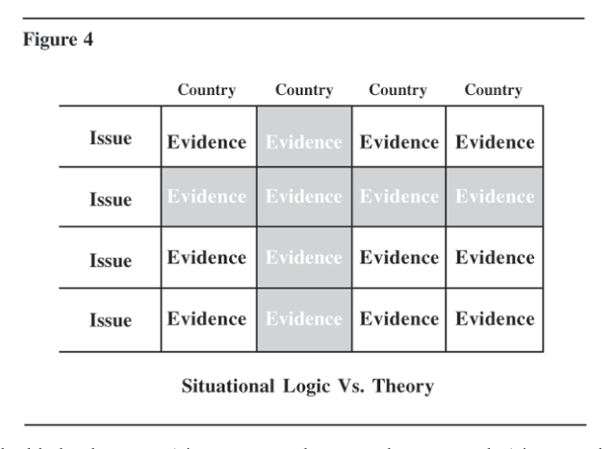

PART II—TOOLS FOR THINKING Chapter 4 Strategies for Analytical Judgment: Transcending the Limits of Incomplete Information
When intelligence analysts make thoughtful analytical judgments, how do they do it? In seeking answers to this question, this chapter discusses the strengths and limitations of situational logic, theory, comparison, and simple immersion in the data as strategies for the generation and evaluation of hypotheses. The final section discusses alternative strategies for choosing among hypotheses. One strategy too often used by intelligence analysts is described as “satisficing”—choosing the first hypothesis that appears good enough rather than carefully identifying all possible hypotheses and determining which is most consistent with the evidence.37
* * * * * * * * * * * * * * * * * * *
Intelligence analysts should be self-conscious about their reasoning process. They should think about how they make judgments and reach conclusions, not just about the judgments and conclusions themselves. Webster’s dictionary defines judgment as arriving at a “decision or conclusion on the basis of indications and probabilities when the facts are not clearly ascertained.” 38 Judgment is what analysts use to fill gaps in their knowledge. It entails going beyond the available information and is the principal means of coping with uncertainty. It always involves an analytical leap, from the known into the uncertain.
Judgment is an integral part of all intelligence analysis. While the optimal goal of intelligence collection is complete knowledge, this goal is seldom reached in practice. Almost by definition of the intelligence mission, intelligence issues involve considerable uncertainty. Thus, the analyst is commonly working with incomplete, ambiguous, and often contradictory data. The intelligence analyst’s function might be described as transcending the limits of incomplete information through the exercise of analytical judgment. The ultimate nature of judgment remains a mystery. It is possible, however, to identify diverse strategies that analysts employ to process information as they prepare to pass judgment. Analytical strategies are important because they influence the data one attends to. They determine where the analyst shines his or her searchlight, and this inevitably affects the outcome of the analytical process.
Strategies for Generating and Evaluating Hypotheses
This book uses the term hypothesis in its broadest sense as a potential explanation or conclusion that is to be tested by collecting and presenting evidence. Examination of how analysts generate and evaluate hypotheses identifies three principal strategies—the application of theory, situational logic, and comparison—each of which is discussed at some length below. A “non-strategy,” immersion in the data and letting the data speak for themselves, is also discussed. This list of analytical strategies is not exhaustive. Other strategies might include, for example, projecting one’s own psychological needs onto the data at hand, but this discussion is not concerned with the pathology of erroneous judgment. Rather, the goal is to understand the several kinds of careful, conscientious analysis one would hope and expect to find among a cadre of intelligence analysts dealing with highly complex issues.
Situational Logic
This is the most common operating mode for intelligence analysts. Generation and analysis of hypotheses start with consideration of concrete elements of the current situation, rather than with broad generalizations that encompass many similar cases. The situation is regarded as one-of-a-kind, so that it must be understood in terms of its own unique logic, rather than as one example of a broad class of comparable events.
Starting with the known facts of the current situation and an understanding of the unique forces at work at that particular time and place, the analyst seeks to identify the logical antecedents or consequences of this situation. A scenario is developed that hangs together as a plausible narrative. The analyst may work backwards to explain the origins or causes of the current situation or forward to estimate the future outcome. Situational logic commonly focuses on tracing cause-effect relationships or, when dealing with purposive behavior, means-ends relationships. The analyst identifies the goals being pursued and explains why the foreign actor(s) believe certain means will achieve those goals. Particular strengths of situational logic are its wide applicability and ability to integrate a large volume of relevant detail. Any situation, however unique, may be analyzed in this manner. Situational logic as an analytical strategy also has two principal weaknesses. One is that it is so difficult to understand the mental and bureaucratic processes of foreign leaders and governments. To see the options faced by foreign leaders as these leaders see them, one must understand their values and assumptions and even their misperceptions and misunderstandings. Without such insight, interpreting foreign leaders’ decisions or forecasting future decisions is often little more than partially informed speculation. Too frequently, foreign behavior appears “irrational” or “not in their own best interest.” Such conclusions often indicate analysts have projected American values and conceptual frameworks onto the foreign leaders and societies, rather than understanding the logic of the situation as it appears to them. The second weakness is that situational logic fails to exploit the theoretical knowledge derived from study of similar phenomena in other countries and other time periods. The subject of national separatist movements illustrates the point. Nationalism is a centuries-old problem, but most Western industrial democracies have been considered well-integrated national communities. Even so, recent years have seen an increase in pressures from minority ethnic groups seeking independence or autonomy. Why has this phenomenon occurred recently in Scotland, southern France and Corsica, Quebec, parts of Belgium, and Spain—as well as in less stable Third World countries where it might be expected? Dealing with this topic in a logic-of-the-situation mode, a country analyst would examine the diverse political, economic, and social groups whose interests are at stake in the country. Based on the relative power
positions of these groups, the dynamic interactions among them, and anticipated trends or developments that might affect the future positions of the interested parties, the analyst would seek to identify the driving forces that will determine the eventual outcome. It is quite possible to write in this manner a detailed and seemingly well-informed study of a separatist movement in a single country while ignoring the fact that ethnic conflict as a generic phenomenon has been the subject of considerable theoretical study. By studying similar phenomena in many countries, one can generate and evaluate hypotheses concerning root causes that may not even be considered by an analyst who is dealing only with the logic of a single situation. For example, to what extent does the resurgence of long-dormant ethnic sentiments stem from a reaction against the cultural homogenization that accompanies modern mass communications systems? Analyzing many examples of a similar phenomenon, as discussed below, enables one to probe more fundamental causes than those normally considered in logic-of-the-situation analysis. The proximate causes identified by situational logic appear, from the broader perspective of theoretical analysis, to be but symptoms indicating the presence of more fundamental causal factors. A better understanding of these fundamental causes is critical to effective forecasting, especially over the longer range. While situational logic may be the best approach to estimating shortterm developments, a more theoretical approach is required as the analytical perspective moves further into the future.
Applying Theory
Theory is an academic term not much in vogue in the Intelligence Community, but it is unavoidable in any discussion of analytical judgment. In one popular meaning of the term, “theoretical” is associated with the terms “impractical” and “unrealistic”. Needless to say, it is used here in a quite different sense. A theory is a generalization based on the study of many examples of some phenomenon. It specifies that when a given set of conditions arises, certain other conditions will follow either with certainty or with some degree of probability. In other words, conclusions are judged to follow from a set of conditions and a finding that these conditions apply in the specific case being analyzed. For example, Turkey is a developing country in a precarious strategic position. This defines a set of conditions that
imply conclusions concerning the role of the military and the nature of political processes in that country, because analysts have an implicit if not explicit understanding of how these factors normally relate. What academics refer to as theory is really only a more explicit version of what intelligence analysts think of as their basic understanding of how individuals, institutions, and political systems normally behave. There are both advantages and drawbacks to applying theory in intelligence analysis. One advantage is that “theory economizes thought.” By identifying the key elements of a problem, theory enables an analyst to sort through a mass of less significant detail. Theory enables the analyst to see beyond today’s transient developments, to recognize which trends are superficial and which are significant, and to foresee future developments for which there is today little concrete evidence. Consider, for example, the theoretical proposition that economic development and massive infusion of foreign ideas in a feudal society lead to political instability. This proposition seems well established. When applied to Saudi Arabia, it suggests that the days of the Saudi monarchy are numbered, although analysts of the Saudi scene using situational logic find little or no current evidence of a meaningful threat to the power and position of the royal family. Thus, the application of a generally accepted theoretical proposition enables the analyst to forecast an outcome for which the “hard evidence” has not yet begun to develop. This is an important strength of theoretical analysis when applied to realworld problems. Yet this same example also illustrates a common weakness in applying theory to analysis of political phenomena. Theoretical propositions frequently fail to specify the time frame within which developments might be anticipated to occur. The analytical problem with respect to Saudi Arabia is not so much whether the monarchy will eventually be replaced, as when or under what conditions this might happen. Further elaboration of the theory relating economic development and foreign ideas to political instability in feudal societies would identify early warning indicators that analysts might look for. Such indicators would guide both intelligence collection and analysis of sociopolitical and socioeconomic data and lead to hypotheses concerning when or under what circumstances such an event might occur. But if theory enables the analyst to transcend the limits of available data, it may also provide the basis for ignoring evidence that is truly
indicative of future events. Consider the following theoretical propositions in the light of popular agitation against the Shah of Iran in the late 1970s: (1) When the position of an authoritarian ruler is threatened, he will defend his position with force if necessary. (2) An authoritarian ruler enjoying complete support of effective military and security forces cannot be overthrown by popular opinion and agitation. Few would challenge these propositions, yet when applied to Iran in the late 1970s, they led Iran specialists to misjudge the Shah’s chances for retaining the peacock throne. Many if not most such specialists seemed convinced that the Shah remained strong and that he would crack down on dissent when it threatened to get out of control. Many persisted in this assessment for several months after the accumulation of what in retrospect appears to have been strong evidence to the contrary. Persistence of these assumptions is easily understood in psychological terms. When evidence is lacking or ambiguous, the analyst evaluates hypotheses by applying his or her general background knowledge concerning the nature of political systems and behavior. The evidence on the strength of the Shah and his intention to crack down on dissidents was ambiguous, but the Iranian monarch was an authoritarian ruler, and authoritarian regimes were assumed to have certain characteristics, as noted in the previously cited propositions. Thus beliefs about the Shah were embedded in broad and persuasive assumptions about the nature of authoritarian regimes per se. For an analyst who believed in the two aforementioned propositions, it would have taken far more evidence, including more unambiguous evidence, to infer that the Shah would be overthrown than to justify continued confidence in his future.39 Figure 4 below illustrates graphically the difference between theory and situational logic. Situational logic looks at the evidence within a single country on multiple interrelated issues, as shown by the column highlighted in gray. This is a typical area studies approach. Theoretical analysis looks at the evidence related to a single issue in multiple countries, as shown by the row highlighted in gray. This is a typical social science approach. The distinction between theory and situational logic is not as clear as it may seem from this graphic, however. Logic-of-the-situation analysis also draws heavily on theoretical assumptions. How does the analyst select the most significant elements to describe the current situation, or identify the causes or consequences of these elements, without some implicit theory that relates the likelihood of certain outcomes to certain antecedent conditions? For example, if the analyst estimating the outcome of an impending election does not have current polling data, it is necessary to look back at past elections, study the campaigns, and then judge how voters are likely to react to the current campaigns and to events that influence voter attitudes. In doing so, the analyst operates from a set of assumptions about human nature and what drives people and groups. These assumptions form part of a theory of political behavior, but it is a different sort of theory than was discussed under theoretical analysis. It does not illuminate the entire situation, but only a small increment of the situation, and it may not apply beyond the specific country of concern. Further, it is

much more likely to remain implicit, rather than be a focal point of the analysis.
Comparison with Historical Situations
A third approach for going beyond the available information is comparison. An analyst seeks understanding of current events by comparing them with historical precedents in the same country, or with similar events in other countries. Analogy is one form of comparison. When an historical situation is deemed comparable to current circumstances, analysts use their understanding of the historical precedent to fill gaps in their understanding of the current situation. Unknown elements of the present are assumed to be the same as known elements of the historical precedent. Thus, analysts reason that the same forces are at work, that the outcome of the present situation is likely to be similar to the outcome of the historical situation, or that a certain policy is required in order to avoid the same outcome as in the past. Comparison differs from situational logic in that the present situation is interpreted in the light of a more or less explicit conceptual model that is created by looking at similar situations in other times or places. It differs from theoretical analysis in that this conceptual model is based on a single case or only a few cases, rather than on many similar cases. Comparison may also be used to generate theory, but this is a more narrow kind of theorizing that cannot be validated nearly as well as generalizations inferred from many comparable cases. Reasoning by comparison is a convenient shortcut, one chosen when neither data nor theory are available for the other analytical strategies, or simply because it is easier and less time-consuming than a more detailed analysis. A careful comparative analysis starts by specifying key elements of the present situation. The analyst then seeks out one or more historical precedents that may shed light on the present. Frequently, however, a historical precedent may be so vivid and powerful that it imposes itself upon a person’s thinking from the outset, conditioning them to perceive the present primarily in terms of its similarity to the past. This is reasoning by analogy. As Robert Jervis noted, “historical analogies often precede, rather than follow, a careful analysis of a situation.”40 The tendency to relate contemporary events to earlier events as a guide to understanding is a powerful one. Comparison helps achieve understanding by reducing the unfamiliar to the familiar. In the absence of data required for a full understanding of the current situation, reasoning by comparison may be the only alternative. Anyone taking this approach, however, should be aware of the significant potential for error. This course is an implicit admission of the lack of sufficient information to understand the present situation in its own right, and lack of relevant theory to relate the present situation to many other comparable situations The difficulty, of course, is in being certain that two situations are truly comparable. Because they are equivalent in some respects, there is a tendency to reason as though they were equivalent in all respects, and to assume that the current situation will have the same or similar outcome as the historical situation. This is a valid assumption only when based on in-depth analysis of both the current situation and the historical precedent to ensure that they are actually comparable in all relevant respects. In a short book that ought to be familiar to all intelligence analysts, Ernest May traced the impact of historical analogy on US foreign policy.41 He found that because of reasoning by analogy, US policymakers tend to be one generation behind, determined to avoid the mistakes of the previous generation. They pursue the policies that would have been most appropriate in the historical situation but are not necessarily well adapted to the current one. Policymakers in the 1930s, for instance, viewed the international situation as analogous to that before World War I. Consequently, they followed a policy of isolation that would have been appropriate for preventing American involvement in the first World War but failed to prevent the second. Communist aggression after World War II was seen as analogous to Nazi aggression, leading to a policy of containment that could have prevented World War II. More recently, the Vietnam analogy has been used repeatedly over many years to argue against an activist US foreign policy. For example, some used the Vietnam analogy to argue against US participation in the Gulf War—a flawed analogy because the operating terrain over which
battles were fought was completely different in Kuwait/Iraq and much more in our favor there as compared with Vietnam. May argues that policymakers often perceive problems in terms of analogies with the past, but that they ordinarily use history badly:
When resorting to an analogy, they tend to seize upon the first that comes to mind. They do not research more widely. Nor do they pause to analyze the case, test its fitness, or even ask in what ways it might be misleading.42
As compared with policymakers, intelligence analysts have more time available to “analyze rather than analogize.” Intelligence analysts tend to be good historians, with a large number of historical precedents available for recall. The greater the number of potential analogues an analyst has at his or her disposal, the greater the likelihood of selecting an appropriate one. The greater the depth of an analyst’s knowledge, the greater the chances the analyst will perceive the differences as well as the similarities between two situations. Even under the best of circumstances, however, inferences based on comparison with a single analogous situation probably are more prone to error than most other forms of inference. The most productive uses of comparative analysis are to suggest hypotheses and to highlight differences, not to draw conclusions. Comparison can suggest the presence or the influence of variables that are not readily apparent in the current situation, or stimulate the imagination to conceive explanations or possible outcomes that might not otherwise occur to the analyst. In short, comparison can generate hypotheses that then guide the search for additional information to confirm or refute these hypotheses. It should not, however, form the basis for conclusions unless thorough analysis of both situations has confirmed they are indeed comparable.
Data Immersion
Analysts sometimes describe their work procedure as immersing themselves in the data without fitting the data into any preconceived pattern. At some point an apparent pattern (or answer or explanation) emerges spontaneously, and the analyst then goes back to the data to check how well the data support this judgment. According to this view, objectivity requires the analyst to suppress any personal opinions or preconceptions, so as to be guided only by the “facts” of the case. To think of analysis in this way overlooks the fact that information cannot speak for itself. The significance of information is always a joint function of the nature of the information and the context in which it is interpreted. The context is provided by the analyst in the form of a set of assumptions and expectations concerning human and organizational behavior. These preconceptions are critical determinants of which information is considered relevant and how it is interpreted. Of course there are many circumstances in which the analyst has no option but to immerse himself or herself in the data. Obviously, an analyst must have a base of knowledge to work with before starting analysis. When dealing with a new and unfamiliar subject, the uncritical and relatively non-selective accumulation and review of information is an appropriate first step. But this is a process of absorbing information, not analyzing it. Analysis begins when the analyst consciously inserts himself or herself into the process to select, sort, and organize information. This selection and organization can only be accomplished according to conscious or subconscious assumptions and preconceptions. The question is not whether one’s prior assumptions and expectations influence analysis, but only whether this influence is made explicit or remains implicit. The distinction appears to be important. In research to determine how physicians make medical diagnoses, the doctors who comprised the test subjects were asked to describe their analytical strategies. Those who stressed thorough collection of data as their principal analytical method were significantly less accurate in their diagnoses than those who described themselves as following other analytical strategies such as identifying and testing hypotheses.43 Moreover, the collection of additional data through greater thoroughness in the medical history and physical examination did not lead to increased diagnostic accuracy.44 One might speculate that the analyst who seeks greater objectivity by suppressing recognition of his or her own subjective input actually has less valid input to make. Objectivity is gained by making assumptions
explicit so that they may be examined and challenged, not by vain efforts to eliminate them from analysis.
Relationships Among Strategies
No one strategy is necessarily better than the others. In order to generate all relevant hypotheses and make maximum use of all potentially relevant information, it would be desirable to employ all three strategies at the early hypothesis generation phase of a research project. Unfortunately, analysts commonly lack the inclination or time to do so. Different analysts have different analytical habits and preferences for analytical strategy. As a broad generalization that admits numerous exceptions, analysts trained in area studies or history tend to prefer situational logic, while those with a strong social science background are more likely to bring theoretical and comparative insights to bear on their work. The Intelligence Community as a whole is far stronger in situational logic than in theory. In my judgment, intelligence analysts do not generalize enough, as opposed to many academic scholars who generalize too much. This is especially true in political analysis, and it is not entirely due to unavailability of applicable political theory. Theoretical insights that are available are often unknown to or at least not used by political intelligence analysts. Differences in analytical strategy may cause fundamental differences in perspective between intelligence analysts and some of the policymakers for whom they write. Higher level officials who are not experts on the subject at issue use far more theory and comparison and less situational logic than intelligence analysts. Any policymaker or other senior manager who lacks the knowledge base of the specialist and does not have time for detail must, of necessity, deal with broad generalizations. Many decisions must be made, with much less time to consider each of them than is available to the intelligence analyst. This requires the policymaker to take a more conceptual approach, to think in terms of theories, models, or analogies that summarize large amounts of detail. Whether this represents sophistication or oversimplification depends upon the individual case and, perhaps, whether one agrees or disagrees with the judgments made. In any event, intelligence analysts would do well to take this phenomenon into account when writing for their consumers.
Strategies for Choice Among Hypotheses
A systematic analytical process requires selection among alternative hypotheses, and it is here that analytical practice often diverges significantly from the ideal and from the canons of scientific method. The ideal is to generate a full set of hypotheses, systematically evaluate each hypothesis, and then identify the hypothesis that provides the best fit to the data. Scientific method, for its part, requires that one seek to disprove hypotheses rather than confirm them. In practice, other strategies are commonly employed. Alexander George has identified a number of less-than-optimal strategies for making decisions in the face of incomplete information and multiple, competing values and goals. While George conceived of these strategies as applicable to how decisionmakers choose among alternative policies, most also apply to how intelligence analysts might decide among alternative analytical hypotheses.
The relevant strategies George identified are:
• "Satisficing"—selecting the first identified alternative that appears "good enough" rather than examining all alternatives to determine which is "best." • Incrementalism—focusing on a narrow range of alternatives representing marginal change, without considering the need for dramatic change from an existing position. • Consensus—opting for the alternative that will elicit the greatest agreement and support. Simply telling the boss what he or she wants to hear is one version of this. • Reasoning by analogy—choosing the alternative that appears most likely to avoid some previous error or to duplicate a previous success. • Relying on a set of principles or maxims that distinguish a "good" from a "bad" alternative.45
The intelligence analyst has another tempting option not available to the policymaker: to avoid judgment by simply describing the current situation, identifying alternatives, and letting the intelligence consumer make the judgment about which alternative is most likely. Most of these strategies are not discussed here. The following paragraphs focus only on the one that seems most prevalent in intelligence analysis.
“Satisficing”
I would suggest, based on personal experience and discussions with analysts, that most analysis is conducted in a manner very similar to the satisficing mode (selecting the first identified alternative that appears “good enough”).46 The analyst identifies what appears to be the most likely hypothesis—that is, the tentative estimate, explanation, or description of the situation that appears most accurate. Data are collected and organized according to whether they support this tentative judgment, and the hypothesis is accepted if it seems to provide a reasonable fit to the data. The careful analyst will then make a quick review of other possible hypotheses and of evidence not accounted for by the preferred judgment to ensure that he or she has not overlooked some important consideration. This approach has three weaknesses: the selective perception that results from focus on a single hypothesis, failure to generate a complete set of competing hypotheses, and a focus on evidence that confirms rather than disconfirms hypotheses. Each of these is discussed below.
Selective Perception. Tentative hypotheses serve a useful function in helping analysts select, organize, and manage information. They narrow the scope of the problem so that the analyst can focus efficiently on data that are most relevant and important. The hypotheses serve as organizing frameworks in working memory and thus facilitate retrieval of information from memory. In short, they are essential elements of the analytical process. But their functional utility also entails some cost, because a hypothesis functions as a perceptual filter. Analysts, like people in general, tend to see what they are looking for and to overlook that which is not specifically included in their search strategy. They tend to limit the processed information to that which is relevant to the current hypothesis.
If the hypothesis is incorrect, information may be lost that would suggest a new or modified hypothesis. This difficulty can be overcome by the simultaneous consideration of multiple hypotheses. This approach is discussed in detail in Chapter 8. It has the advantage of focusing attention on those few items of evidence that have the greatest diagnostic value in distinguishing among the validity of competing hypotheses. Most evidence is consistent with several different hypotheses, and this fact is easily overlooked when analysts focus on only one hypothesis at a time—especially if their focus is on seeking to confirm rather than disprove what appears to be the most likely answer.
Failure To Generate Appropriate Hypotheses. If tentative hypotheses determine the criteria for searching for information and judging its relevance, it follows that one may overlook the proper answer if it is not encompassed within the several hypotheses being considered. Research on hypothesis generation suggests that performance on this task is woefully inadequate.47 When faced with an analytical problem, people are either unable or simply do not take the time to identify the full range of potential answers. Analytical performance might be significantly enhanced by more deliberate attention to this stage of the analytical process. Analysts need to take more time to develop a full set of competing hypotheses, using all three of the previously discussed strategies—theory, situational logic, and comparison. Failure To Consider Diagnosticity of Evidence. In the absence of a complete set of alternative hypotheses, it is not possible to evaluate the “diagnosticity” of evidence. Unfortunately, many analysts are unfamiliar with the concept of diagnosticity of evidence. It refers to the extent to which any item of evidence helps the analyst determine the relative likelihood of alternative hypotheses.
To illustrate, a high temperature may have great value in telling a doctor that a patient is sick, but relatively little value in determining which illness the patient is suffering from. Because a high temperature is consistent with so many possible hypotheses about a patient’s illness, it has limited diagnostic value in determining which illness (hypothesis) is the more likely one.
Evidence is diagnostic when it influences an analyst’s judgment on the relative likelihood of the various hypotheses. If an item of evidence seems consistent with all the hypotheses, it may have no diagnostic value at all. It is a common experience to discover that most available evidence really is not very helpful, as it can be reconciled with all the hypotheses.
Failure To Reject Hypotheses
Scientific method is based on the principle of rejecting hypotheses, while tentatively accepting only those hypotheses that cannot be refuted. Intuitive analysis, by comparison, generally concentrates on confirming a hypothesis and commonly accords more weight to evidence supporting a hypothesis than to evidence that weakens it. Ideally, the reverse would be true. While analysts usually cannot apply the statistical procedures of scientific methodology to test their hypotheses, they can and should adopt the conceptual strategy of seeking to refute rather than confirm hypotheses. There are two aspects to this problem: people do not naturally seek disconfirming evidence, and when such evidence is received it tends to be discounted. If there is any question about the former, consider how often people test their political and religious beliefs by reading newspapers and books representing an opposing viewpoint. Concerning the latter, we have noted in Chapter 2, “Perception: Why Can’t We See What Is There to Be Seen?” the tendency to accommodate new information to existing images. This is easy to do if information supporting a hypothesis is accepted as valid, while information that weakens it is judged to be of questionable reliability or an unimportant anomaly. When information is processed in this manner, it is easy to “confirm” almost any hypothesis that one already believes to be true. Apart from the psychological pitfalls involved in seeking confirmatory evidence, an important logical point also needs to be considered. The logical reasoning underlying the scientific method of rejecting hypotheses is that “. . . no confirming instance of a law is a verifying instance, but that any disconfirming instance is a falsifying instance.”48 In other words, a hypothesis can never be proved by the enumeration of even a large body of evidence consistent with that hypothesis, because the same body of evidence may also be consistent with other hypotheses. A hypothesis may be disproved, however, by citing a single item of evidence that is incompatible with it. P. C. Wason conducted a series of experiments to test the view that people generally seek confirming rather than disconfirming evidence.49 The experimental design was based on the above point that the validity of a hypothesis can only be tested by seeking to disprove it rather than confirm it. Test subjects were given the three-number sequence, 2 - 4 - 6, and asked to discover the rule employed to generate this sequence. In order to do so, they were permitted to generate three-number sequences of their own and to ask the experimenter whether these conform to the rule. They were encouraged to generate and ask about as many sequences as they wished and were instructed to stop only when they believed they had discovered the rule. There are, of course, many possible rules that might account for the sequence 2 - 4 - 6. The test subjects formulated tentative hypotheses such as any ascending sequence of even numbers, or any sequence separated by two digits. As expected, the test subjects generally took the incorrect approach of trying to confirm rather than eliminate such hypotheses. To test the hypothesis that the rule was any ascending sequence of even numbers, for example, they might ask if the sequence 8 - 10 - 14 conforms to the rule. Readers who have followed the reasoning to this point will recognize that this hypothesis can never be proved by enumerating examples of ascending sequences of even numbers that are found to conform to the sought-for rule. One can only disprove the hypothesis by citing an ascending sequence of odd numbers and learning that this, too, conforms to the rule. The correct rule was any three ascending numbers, either odd or even. Because of their strategy of seeking confirming evidence, only six of the 29 test subjects in Wason’s experiment were correct the first time they thought they had discovered the rule. When this same experiment was repeated by a different researcher for a somewhat different purpose, none
of the 51 test subjects had the right answer the first time they thought they had discovered the rule.50 In the Wason experiment, the strategy of seeking confirming rather than disconfirming evidence was particularly misleading because the 2 - 4 - 6 sequence is consistent with such a large number of hypotheses. It was easy for test subjects to obtain confirmatory evidence for almost any hypothesis they tried to confirm. It is important to recognize that comparable situations, when evidence is consistent with several different hypotheses, are extremely common in intelligence analysis. Consider lists of early warning indicators, for example. They are designed to be indicative of an impending attack. Very many of them, however, are also consistent with the hypothesis that military movements are a bluff to exert diplomatic pressure and that no military action will be forthcoming. When analysts seize upon only one of these hypotheses and seek evidence to confirm it, they will often be led astray. The evidence available to the intelligence analyst is in one important sense different from the evidence available to test subjects asked to infer the number sequence rule. The intelligence analyst commonly deals with problems in which the evidence has only a probabilistic relationship to the hypotheses being considered. Thus it is seldom possible to eliminate any hypothesis entirely, because the most one can say is that a given hypothesis is unlikely given the nature of the evidence, not that it is impossible. This weakens the conclusions that can be drawn from a strategy aimed at eliminating hypotheses, but it does not in any way justify a strategy aimed at confirming them. Circumstances and insufficient data often preclude the application of rigorous scientific procedures in intelligence analysis—including, in particular, statistical methods for testing hypotheses. There is, however, certainly no reason why the basic conceptual strategy of looking for contrary evidence cannot be employed. An optimal analytical strategy requires that analysts search for information to disconfirm their favorite theories, not employ a satisficing strategy that permits acceptance of the first hypothesis that seems consistent with the evidence.
Conclusion
There are many detailed assessments of intelligence failures, but few comparable descriptions of intelligence successes. In reviewing the literature on intelligence successes, Frank Stech found many examples of success but only three accounts that provide sufficient methodological details to shed light on the intellectual processes and methods that contributed to the successes. These dealt with successful American and British intelligence efforts during World War II to analyze German propaganda, predict German submarine movements, and estimate future capabilities and intentions of the German Air Force.51 Stech notes that in each of these highly successful efforts, the analysts employed procedures that “. . . facilitated the formulation and testing against each other of alternative hypothetical estimates of enemy intentions. Each of the three accounts stressed this pitting of competing hypotheses against the evidence.”52 The simultaneous evaluation of multiple, competing hypotheses permits a more systematic and objective analysis than is possible when an analyst focuses on a single, most-likely explanation or estimate. The simultaneous evaluation of multiple, competing hypotheses entails far greater cognitive strain than examining a single, most-likely hypothesis. Retaining multiple hypotheses in working memory and noting how each item of evidence fits into each hypothesis add up to a formidable cognitive task. That is why this approach is seldom employed in intuitive analysis of complex issues. It can be accomplished, however, with the help of simple procedures described in Chapter 8, “Analysis of Competing Hypotheses.”